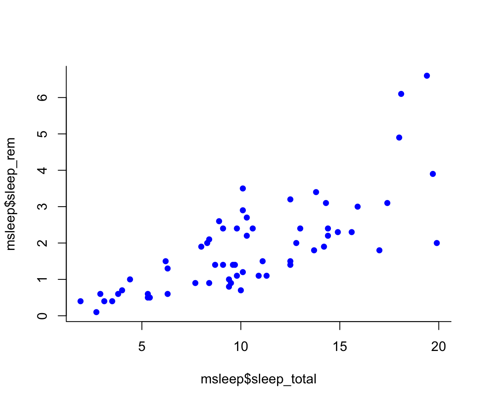
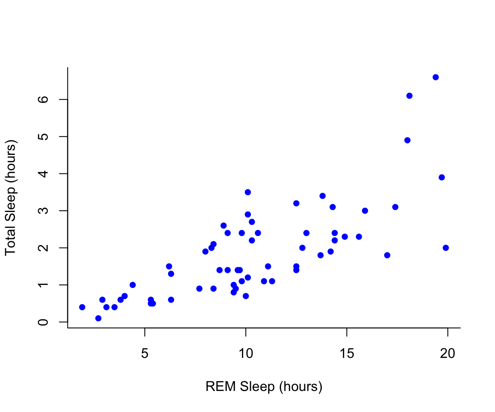
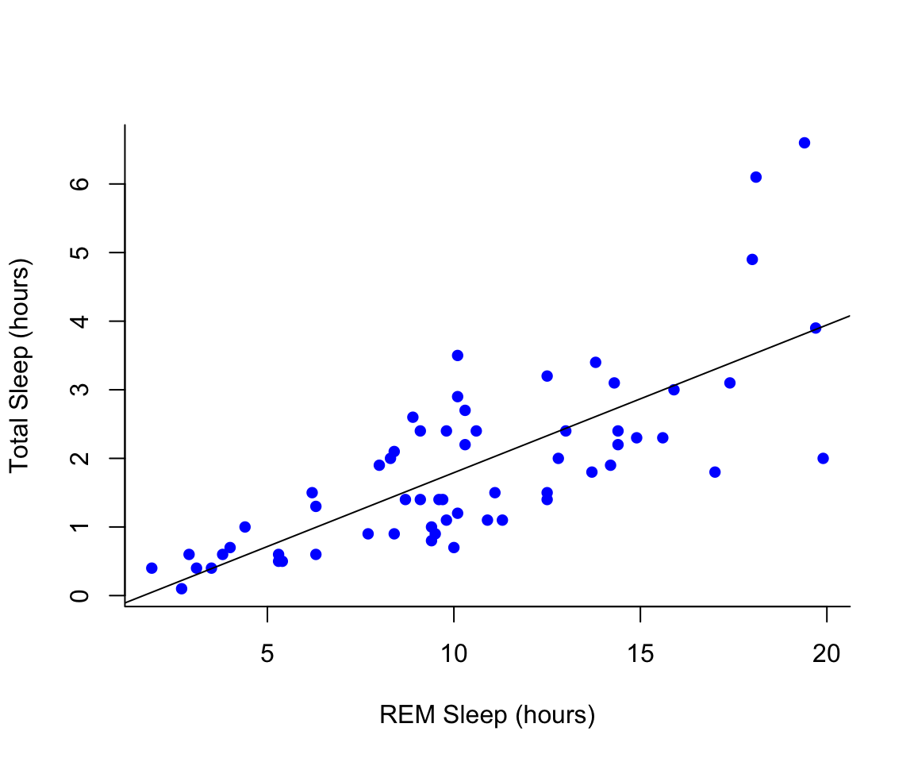
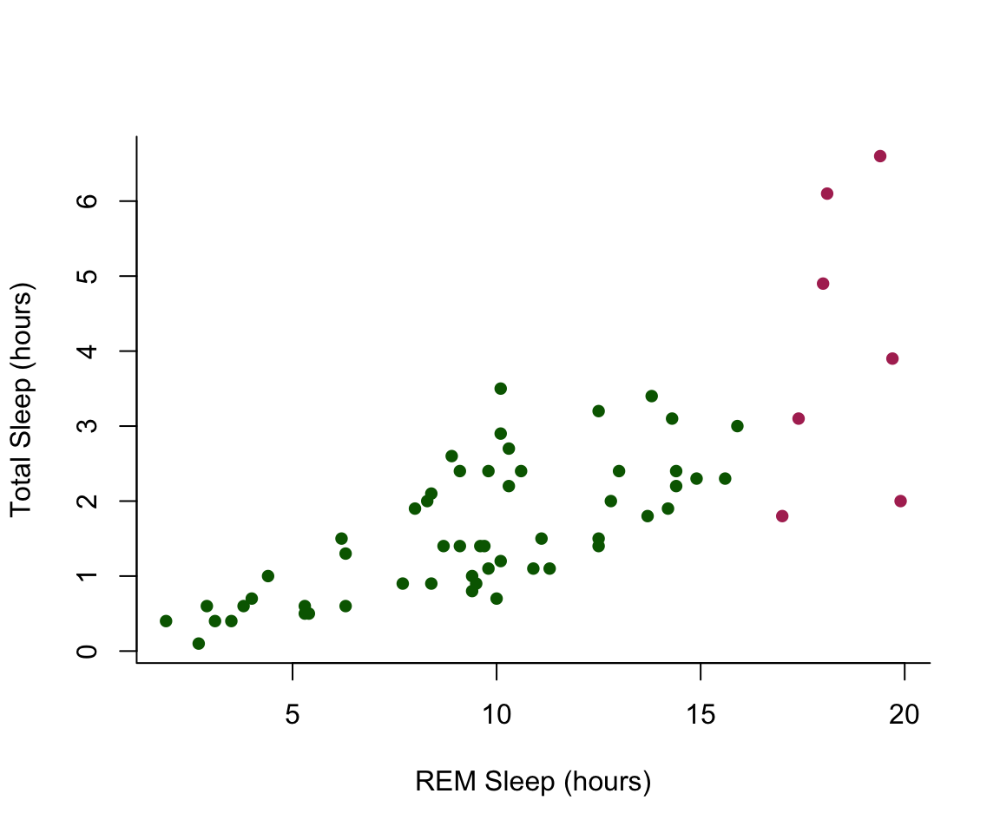
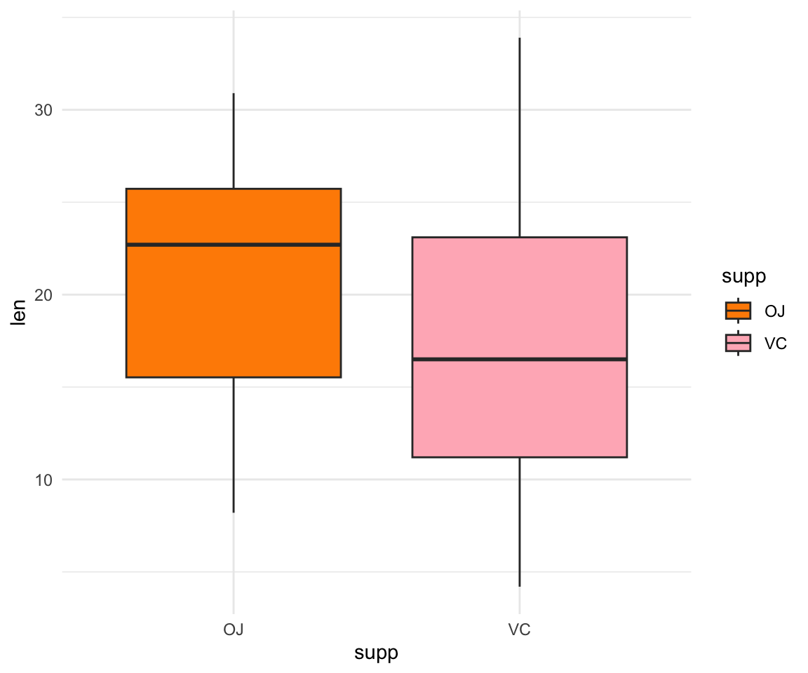
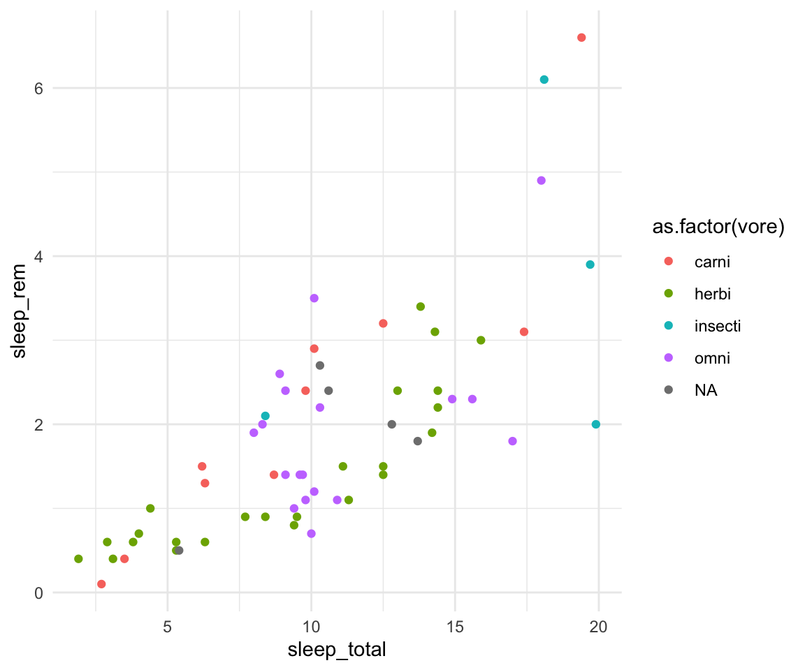

7 Week 6- Plotting in R
We’re again drawing some of this material from the STEMinist_R materials which can be found here
We will also be talking a lot about figures and how to make and interpret figures in the lecture slides here: Week 6 Slides)
7.1 Main Objectives
- Learn how to subset dataframes and how to use logicals
- Learn how to make various plots in R, including histograms, scatterplots and boxplots, as well as learn how to customize those plots
- Learn useful commands in R including points(), lines(), abline(), hist(), boxplot() and plot() -Learn how to use arguments within plot(): main, xlab, ylab, col, pch, cex
Start by making a new R script titled Week 6- plotting so that you can
follow along with today’s code! We will again work with the sleep
dataset on sleep patterns in mammals. This requires installing a package
(ggplot2) and loading the data (msleep). This dataset includes
information about mammal sleep times and weights that was taken from a
study by V. M. Savage and G. B. West. “A quantitative, theoretical
framework for understanding mammalian sleep. Proceedings of the National
Academy of Sciences, 104 (3):1051-1056, 2007.”
The data includes name (common name), genus, vore (carnivore,
omnivore, etc), order, conservation (status), sleep_total (total
amount of sleep in hours), sleep_rem (rem sleep in hours),
sleep_cycle (length of sleep cycle, in hours), awake (amount of time
spent awake, in hours), brainwt (brain weight in kilograms) and
bodywt (body weight in kilograms).
7.2 Subsetting datasets & logicals
A few useful commands: equals ==, does not equal !=, greater than
>, less than <, and &, and a pipe which can also indicate “and”
|.
Reminder there are two assignment operators in R <- and a single
equals sign =. The one you use really depends on how you learned to
use R, and are otherwise equivalent.
Logical conditions vs. assignment operators:
Logical values of TRUE and FALSE are special in R. What class is a logical value?
#> [1] TRUE#> [1] FALSE#> [1] "logical"Logical values are stored as 0 for FALSE and 1 for TRUE. Which means you can do math with them!
#> [1] 2#> [1] 1#> [1] 2#> [1] FALSE#> [1] FALSE FALSE TRUE TRUELogicals will be the output of various tests:
#> [1] TRUE#> [1] FALSE#> [1] FALSE#> [1] TRUE#> [1] FALSE#> [1] TRUE#> [1] TRUE#> [1] TRUE#> [1] FALSE#> [1] TRUE#> [1] FALSEThis is very useful because we can use logicals to query a data frame or vector.
# in our msleep data frame, which species have total sleep greater than or equal to 18 hours?
msleep[,"sleep_total"]>=18#> sleep_total
#> [1,] FALSE
#> [2,] FALSE
#> [3,] FALSE
#> [4,] FALSE
#> [5,] FALSE
#> [6,] FALSE
#> [7,] FALSE
#> [8,] FALSE
#> [9,] FALSE
#> [10,] FALSE
#> [11,] FALSE
#> [12,] FALSE
#> [13,] FALSE
#> [14,] FALSE
#> [15,] FALSE
#> [16,] FALSE
#> [17,] FALSE
#> [18,] FALSE
#> [19,] FALSE
#> [20,] TRUE
#> [21,] FALSE
#> [22,] TRUE
#> [23,] FALSE
#> [24,] FALSE
#> [25,] FALSE
#> [26,] FALSE
#> [27,] FALSE
#> [28,] FALSE
#> [29,] FALSE
#> [30,] FALSE
#> [31,] FALSE
#> [32,] FALSE
#> [33,] FALSE
#> [34,] FALSE
#> [35,] FALSE
#> [36,] FALSE
#> [37,] TRUE
#> [38,] FALSE
#> [39,] FALSE
#> [40,] FALSE
#> [41,] FALSE
#> [42,] FALSE
#> [43,] TRUE
#> [44,] FALSE
#> [45,] FALSE
#> [46,] FALSE
#> [47,] FALSE
#> [48,] FALSE
#> [49,] FALSE
#> [50,] FALSE
#> [51,] FALSE
#> [52,] FALSE
#> [53,] FALSE
#> [54,] FALSE
#> [55,] FALSE
#> [56,] FALSE
#> [57,] FALSE
#> [58,] FALSE
#> [59,] FALSE
#> [60,] FALSE
#> [61,] FALSE
#> [62,] TRUE
#> [63,] FALSE
#> [64,] FALSE
#> [65,] FALSE
#> [66,] FALSE
#> [67,] FALSE
#> [68,] FALSE
#> [69,] FALSE
#> [70,] FALSE
#> [71,] FALSE
#> [72,] FALSE
#> [73,] FALSE
#> [74,] FALSE
#> [75,] FALSE
#> [76,] FALSE
#> [77,] FALSE
#> [78,] FALSE
#> [79,] FALSE
#> [80,] FALSE
#> [81,] FALSE
#> [82,] FALSE
#> [83,] FALSE# Using which() to identify which rows match the logical values (TRUE) and length to count how many species there are
which(msleep[,"sleep_total"]>=18) #20 22 37 43 62 --> the rows that contain organisms that sleep more than 18 hrs#> [1] 20 22 37 43 62#> [1] 5#> # A tibble: 5 × 11
#> name genus vore order conservation sleep_total sleep_rem sleep_cycle awake
#> <chr> <chr> <chr> <chr> <chr> <dbl> <dbl> <dbl> <dbl>
#> 1 North … Dide… omni Dide… lc 18 4.9 0.333 6
#> 2 Big br… Epte… inse… Chir… lc 19.7 3.9 0.117 4.3
#> 3 Thick-… Lutr… carni Dide… lc 19.4 6.6 NA 4.6
#> 4 Little… Myot… inse… Chir… <NA> 19.9 2 0.2 4.1
#> 5 Giant … Prio… inse… Cing… en 18.1 6.1 NA 5.9
#> # ℹ 2 more variables: brainwt <dbl>, bodywt <dbl>Looks like our species include North American opossum, big brown bats, thick-tailed opposums, little brown bats and giant armadillos. What if we only want to see the bats that sleep more than 18 hours per 24 hour period?
msleep[which(msleep[,"sleep_total"]>=18 & msleep[,"order"] == "Chiroptera"),] #should give us two species!#> # A tibble: 2 × 11
#> name genus vore order conservation sleep_total sleep_rem sleep_cycle awake
#> <chr> <chr> <chr> <chr> <chr> <dbl> <dbl> <dbl> <dbl>
#> 1 Big br… Epte… inse… Chir… lc 19.7 3.9 0.117 4.3
#> 2 Little… Myot… inse… Chir… <NA> 19.9 2 0.2 4.1
#> # ℹ 2 more variables: brainwt <dbl>, bodywt <dbl>Class Exercise 1
Let’s keep looking at the mammal sleep data!
Q1. How many mammals sleep 6 hours or less total? Of these species, how many are marine mammals (in the order Cetacea)?
Q2. Of the mammals that less less than 6 hours or less total, how many of them are carnivores?
Q3. Identify which mammal(s) sleep the average amount of hours you sleep at night!
7.3 Plotting in Base R
7.3.1 Scatterplots
First let’s work on building a scatterplot. This can be a good first step for visualizing data and is the base plotting visualization in R.
X vs Y
When thinking about how to plot the x and y axes on a graph, it is important to think about the research question and which variable is the independent vs dependent variable. Our graph will show us how y changes with x, so we want the x axis to represent the independent variable and the y axis will be the dependent variable. In our graph, we are interested in how rem sleep in mammals changes with the total amount of sleep they get, so we will want the second graph, where
sleep_totalis on the x (dependent variable) andsleep_remis on the y (independent variable). Review the lecture slides again if this gets confusing in the homework!
- There are several different arguments within plotting functions that can be used to customize your plot.
colchanges colorpchchanges point charactercexchanges sizetypechanges type (“l” = line, “p” = points, “b” = both)ltychanges line typebtychanges (or removes) the border around the plot (“n” = no box, “7” = top + right, “L” = bottom+left, “C” top+left+bottom, “U” = left+bottom+right)
You can view different point characters with ?pch
There are many color options in R. For some general colors you can write the name (blue, red, green, etc). There are apparently 657 named colors in R (including “slateblue3, and peachpuff4) but you can also use the color hexidecimal code for a given color. There are several comprehensives guides for colors in R online and one of which can be found (here)[https://www.nceas.ucsb.edu/sites/default/files/2020-04/colorPaletteCheatsheet.pdf]
Let’s remake the total_sleep against sleep_rem plot and add-in some modifiers
#Choose a pch and make the color blue and give it a bottom+left border
plot(msleep$sleep_rem~msleep$sleep_total, pch = 16, col="blue", bty="L")
We can change the axes and title labels using “xlab”, “ylab”, and “main” arguments. Let’s add labels to our plot.
#Choose a pch and make the color blue and give it a bottom+left border
plot(msleep$sleep_rem~msleep$sleep_total, pch = 16, col="blue", bty="L", xlab="REM Sleep (hours)", ylab= "Total Sleep (hours)") 
You may want to find out which points are on a plot. You can use
identify() in place of plot() to identify specific points within
your plot. This function prints out the row numbers for the points that
you selected.
We can also add lines to an existing plot with ablines(). Let’s add a
line fit from a linear model to our plot.
#first make a plot
plot(msleep$sleep_rem~msleep$sleep_total, pch = 16, col="blue", bty="L", xlab="REM Sleep (hours)", ylab= "Total Sleep (hours)")
#then add a line. The function lm runs a linear model on our x, y values.
abline(lm(msleep$sleep_rem~msleep$sleep_total))
You can add a legend to a plot with legend() which needs you to
specify the location.
To do this, let’s make a cutoff for our points and color them by points above and below the cutoff. We’ll use our subsetting skills from last week. Feel free to review that section (1.3).
#start by defining points by whether they are greater than sleep_total 16 and storing
#first make a empty column named colors within the msleep dataframe
msleep$colors=NA
#store the colors "red" or "black" in the color column for the rows that satsify the following criteria.
msleep$colors[msleep$sleep_total >= 17] <-"maroon"
msleep$colors[msleep$sleep_total < 17] <-"darkgreen"plot(msleep$sleep_rem~msleep$sleep_total, pch = 16, col=msleep$colors, bty="L", xlab="REM Sleep (hours)", ylab= "Total Sleep (hours)") 
7.3.2 Histograms
In addition to scatterplots you can make histograms and boxplots in base R. The same parameter options (pch, col, ylab, xlab, etc) apply for these plots as well as scatterplots.
R will automatically plot a barplot if you give to the plot() function
a continuous variable and a factor. If you have a vector stored as a
character converting it to a factor via as.factor will make a boxplot.
#let's make a histogram of sleep_total and fill it with the color palette rainbow() which needs to know how many colors to use
hist(msleep$sleep_total, col=rainbow(10))#let's make a boxplot of sleep_total and order making eachone a different color (how would you find out how many unique orders are in msleep?)
#using plot
#plot(msleep$sleep_total~as.factor(msleep$order), col=rainbow(19)) #this is commented out simply to avoid ploting the same plot twiceAnother example looking at sleep variation across the different types of consumers (carnivore, herbivore, insectivore and omnivore):
plot(msleep$sleep_total~as.factor(msleep$vore),col=rainbow(4), xlab="REM Sleep (hours)", ylab= "Total Sleep (hours)")Class Exercise 2
Explore this dataset of chick weight and identify:
- how many chicks are in the dataset (sample size) and how many different diets were used in the experiment? Hint **length() will be a useful command!
- Visualize the relationship of chick weight over time (scatterplot would be useful here!)
- Visualize how different diets impact the weights of the chicks at the final day of the experiments (a boxplot would be useful here!) Read in the data using
data(ChickWeight)
# Note: this dataset can also be accessed directly from the ChickWeight package in R
# (see ?ChickWeight)
data("ChickWeight")For all of your figures try using the package R Color Brewer to generate color palettes. Go to http://colorbrewer2.org/ to vizualize palettes. You can choose palettes that are colorblind safe, print friendly, etc. Define a color pallete with 10 colors and re-plot the histogram of the weights of the chicks at the final day of the experiments in these colors Note: if histogram has n breaks and n is less than 10, it will just use first n colors. If n is greater than 10, it will reuse colors.
7.4 Plotting with ggplot2
GGPlot is a package that allows you to make a lot of different kinds of plots and has become increasingly popular. There are also many tutorials on how to use ggplot as well as example code that could be modified to fit the data you’re interested in plotting. There is a really helpful cheatsheat (here)[https://www.rstudio.com/wp-content/uploads/2015/03/ggplot2-cheatsheet.pdf]
There is a little bit of a learning curve for ggplot as the syntax is structured differently than base R plotting. One thing that remains the same and is even more noticible in ggplot is the iterative process of building a plot, one aspect at a time.
Let’s demonstrate what ggplot can do with this dataset on the Effect of
Vitamin C on Tooth Growth in Guinea Pigs. You can also open your dataset
with this command which pulls it into a different window with View()
#> 'data.frame': 60 obs. of 3 variables:
#> $ len : num 4.2 11.5 7.3 5.8 6.4 10 11.2 11.2 5.2 7 ...
#> $ supp: Factor w/ 2 levels "OJ","VC": 2 2 2 2 2 2 2 2 2 2 ...
#> $ dose: num 0.5 0.5 0.5 0.5 0.5 0.5 0.5 0.5 0.5 0.5 ...This dataset has three columns, len for length of tooth, supp for
supplement provided, either OJ or VC, and dose for amount of the
supplement given. OJ was orange juice and VC was abcorbic acid, and they
wanted to test how these two delivery methods may change tooth growth,
as well as the different doses. Two of our variables are categorical
(supp and dose) while tooth length is continuous. What type of data
you are working with is important when we think about how to visualize
our data.
If you do the command ggplot(data=ToothGrowth) you will just see a
grey box. In order to tell ggplot what to put in the box we use the
aes(). The aes() function stands for aesthetics and will be used to
specify our axes and how we want the data grouped.
Since we have two categories, dose or supplement, and one continuous variable that we want to see how it varies by those categorical variables, let’s try to plot the amount of tooth growth with the supplement given to the guinea pigs.
#we specify which axes we want to be x and y with aes()
#we'll then use geom_point to tell it to make a scatterplot
#using the data we specified in the first command
ggplot(data=ToothGrowth, aes(x=supp, y=len))+geom_point() This scatterplot visualization isn’t super useful since there are only two supplement types, OJ and VC, and the points for tooth length are just spread across the Y axis. A boxplot would likely be the best way to visualize this data, so let’s try that!
There are many types of plots in ggplot that can be called with geom_
including geom_line, geom_boxplot geom_bar and many others!
#we specify which axes we want to be x and y with aes()
ggplot(ToothGrowth, aes(y=len, x=supp))+ geom_boxplot()What if we want to add color to make the two supplements even more distinguishable from one another?
These are the base formats for plots in ggplot2, so it can be fun to
customize the theme, colorscheme etc to make your graphs more specific
to your work and easier to interpret. I like to change the background
from grey to white so that it is less distracting from the data. All of
these things can be modified if we wish. Many of these options can
easily be changed with the theme_ functions.
Let’s change to a minimal theme which removes the gray background in the
back of the plot. Play around with the other themes to see what they
change. You can change colors with RcolorBrewer again with
scale_fill_brewer() or scale_fill_manual() to choose the two colors.
The values=c() part is important when you are using two or more
colors!
#change the theme
ggplot(ToothGrowth, aes(y=len, x=supp, fill= supp))+ geom_boxplot() + scale_fill_manual(values=c("darkorange", "lightpink"))+ theme_minimal()
Now let’s look at the msleep dataset again with view() and make a
plot of total sleep against REM sleep and then group by “vore”. Load the
data with the command below:
Because vore is a character vector we will need to convert it to a
factor for ggplot to be able to use it as a group or a color. This can
be easily done with as.factor().
# because our vore vector is a character vector we must convert it to a factor before we can use it to group or color
ggplot(msleep, aes(y=sleep_rem, x=sleep_total, group=as.factor(vore), color=as.factor(vore))) +geom_point() +theme_minimal()#> Warning: Removed 22 rows containing missing values or values outside the scale range
#> (`geom_point()`).
If you use View() to look at our dataset you will see there are some
NAs in our vore column which may give you a warning when you go to
plot since there is missing data. That looks fine, but we may want to
add axis labels and change the legend. The code below does just that and
changes the theme.
# as we add things to the plot the line can get really long, you can hit enter after the plus sign to start a new line
ggplot(msleep, aes(y=sleep_rem, x=sleep_total, group=as.factor(vore), color=as.factor(vore)))+
geom_point()+
labs(y= "Total Sleep (hours)", x= "REM sleep (hours)")+
theme_minimal()+
scale_color_manual(name="Diet",
labels = c("Carnivore",
"Herbivore",
"Insectivore",
"Omnivore",
"NA"),
values = c("carni"="pink",
"herbi"="darkgreen",
"insecti"="orange",
"omni"="brown",
"NA"="grey"))#> Warning: Removed 22 rows containing missing values or values outside the scale range
#> (`geom_point()`).
Our plot at this point is getting very clunky. You can assign what we
have so far to an object and continue to add parameters without having
to copy and paste the whole plot. This can also be useful for saving
your plots as images for powerpoint presentations with ggsave(). This
will save a photo of your figure on your desktop!
#assign to an object
plot1<-ggplot(msleep, aes(y=sleep_rem, x=sleep_total, group=as.factor(vore), color=as.factor(vore)))+
geom_point()+
labs(y= "Total Sleep (hours)", x= "REM sleep (hours)")+
theme_minimal()+
scale_color_manual(name="Diet",
labels = c("Carnivore",
"Herbivore",
"Insectivore",
"Omnivore",
"NA"),
values = c("carni"="pink",
"herbi"="darkgreen",
"insecti"="orange",
"omni"="brown",
"NA"="grey"))
plot1#> Warning: Removed 22 rows containing missing values or values outside the scale range
#> (`geom_point()`).#> Warning: Removed 22 rows containing missing values or values outside the scale range
#> (`geom_point()`).I use ggplot often with data sets that have multiple character vectors and I want to see how they relate to my continuous variables. For example in the iris dataframe we may be interested in looking at the relationship between Sepal.Length and Sepal.Width for each species. This dataset was published by Ronald Fisher in his 1936 paper: “The use of multiple measurements in taxonomic problems”. It has three plant species (setosa, virginica, versicolor) and four morphological traits measured for each sample in centimeters: Sepal.Length, Sepal.Width, Petal.Length and Petal.Width. As I have mentioned before, it is important to acknowledge that the field of genetics has been built on eugenics, and Fisher (author of this dataset) was a prominent geneticist and eugenicist. More information about this can be accessedhere: https://www.ucl.ac.uk/biosciences/gee/ucl-centre-computational-biology/ronald-aylmer-fisher-1890-1962

ggplot(iris, aes(y=Sepal.Length, x=Sepal.Width, group=Species, color=Species))+
geom_point() + theme_minimal()If you want to add a line of best fit to each population you can do that
with geom_smooth()
ggplot(iris, aes(y=Sepal.Length, x=Sepal.Width, group=Species, color=Species))+
geom_point()+ geom_smooth(method="lm") +theme_minimal()#> `geom_smooth()` using formula = 'y ~ x'Finally, if you want to look at each species on it’s own graph at once
you can look at all of these together with facet_wrap or facet_grid.
ggplot(iris, aes(y=Sepal.Length, x=Sepal.Width, group=Species, color=Species))+
geom_point()+
facet_wrap(~Species)+
geom_smooth(method="lm") +theme_minimal()#> `geom_smooth()` using formula = 'y ~ x'Class Exercise 3
Go back to the Guinea Pig Tooth Dataset (ToothGrowth) and visualize how the different doses of VC and OJ impact tooth growth. Use
facet_wrap()and plot the doses of the treatments within each graph, with three separate graphs for each dose (0.5, 1 and 2) data(ToothGrowth)
ggplot(ToothGrowth, aes(y=len, x=supp, fill= supp))+ geom_boxplot() + facet_wrap(~dose)+ scale_fill_manual(values=c("darkorange", "lightpink"))+ theme_minimal()Plotting the mean values with error bars for several groups can also be
useful for data visualization. You can use the function stat_summary
to find the mean and error around that mean for the given grouping.
Now let’s look again at the Chick Weight dataset! Here’s a plot looking at the mean chickweight by diet.
7.5 For loops and the apply family of functions
A few useful commands: function(), is.na, which, var, length, for(){ }, points, print, paste, plot, unique, sample
for loops: In many languages, the best way to repeat a calculation is to use a for-loop: For example, we could square each number 1 to 10
squares = rep(NA, 10) # use rep to create a vector length 10 of NAs to store the result
for (i in 1:10) { # for loop
squares[i] = i^2
}
squares#> [1] 1 4 9 16 25 36 49 64 81 1007.6 Group Work Activity: Palmer Penguins!
 For this week’s activity we will
be working with the dataset
For this week’s activity we will
be working with the dataset palmerpenguins
https://allisonhorst.github.io/palmerpenguins/ First install the
package with the data. There are two datasets, penguins and
penguins_raw. Learn more about each dataset by doing ?penguins or
?penguins_raw in your console. We will be working with the penguins
dataset for the homework.
Use install.packages("palmerpenguins") To download the data. It might
take a second to download! After it is downloaded check it is there and
prepare the dataset:
#> Warning: package 'palmerpenguins' was built under R version 4.4.1For this week your goal is to do the following:
Without using the
view()command, report the names of the unique species in this dataset and how many species there are.Using the
penguinsdataset, how does bill length vary across the three species? Consider the best way to visualize this figure, is a scatterplot or a boxplot a better fit for showing the variation between the species? Interpret the main takeaway from this figure in one to two sentences.Again using the
penguinsdataset visualize the relationship between bill length and bill depth across the three species. This should all be in one single graph with a specific color and a line of best fit for each of the species. Interpret the main takeaway from this figure in one to two sentences.
Copy the lines in your script used to answer all three of these questions into your canvas submission. Be sure to include the answers for question 1, interpretations for the figures and the two figures you made as well.
7.7 Key Points
Subsetting data is an important part of data exploration
Making plots in R can be really fun, but is important to think about your audience and what you want your plot to convey when making it! For example, scatterplots and boxplots are useful for visualizing different types of data.
You can plot in base R or ggplot, but ggplot can give you more room to customize your figures to your liking
Class Exercise Solutions
Class Exercises: Solutions
Exercise 1
- Q1. How many mammals sleep less than 6 hours total? Of these species, how many are marine mammals (in the order Cetacea)? 16 species, Pilot whale, common porpoise and bottle-nose dolphin
#> [1] 16#> # A tibble: 3 × 11
#> name genus vore order conservation sleep_total sleep_rem sleep_cycle awake
#> <chr> <chr> <chr> <chr> <chr> <dbl> <dbl> <dbl> <dbl>
#> 1 Pilot … Glob… carni Ceta… cd 2.7 0.1 NA 21.4
#> 2 Common… Phoc… carni Ceta… vu 5.6 NA NA 18.4
#> 3 Bottle… Turs… carni Ceta… <NA> 5.2 NA NA 18.8
#> # ℹ 2 more variables: brainwt <dbl>, bodywt <dbl>
- Of the mammals that sleep 6 hours or less, how many of them are herbivores? And what species are included in this list? 11 species, includes cow, roe deer, goat, tree hyrax, Asian elephant, horse, donkey, giraffe, African elephant, sheep and Brazilian tapir
#> [1] 11#> # A tibble: 11 × 11
#> name genus vore order conservation sleep_total sleep_rem sleep_cycle awake
#> <chr> <chr> <chr> <chr> <chr> <dbl> <dbl> <dbl> <dbl>
#> 1 Cow Bos herbi Arti… domesticated 4 0.7 0.667 20
#> 2 Roe d… Capr… herbi Arti… lc 3 NA NA 21
#> 3 Goat Capri herbi Arti… lc 5.3 0.6 NA 18.7
#> 4 Tree … Dend… herbi Hyra… lc 5.3 0.5 NA 18.7
#> 5 Asian… Elep… herbi Prob… en 3.9 NA NA 20.1
#> 6 Horse Equus herbi Peri… domesticated 2.9 0.6 1 21.1
#> 7 Donkey Equus herbi Peri… domesticated 3.1 0.4 NA 20.9
#> 8 Giraf… Gira… herbi Arti… cd 1.9 0.4 NA 22.1
#> 9 Afric… Loxo… herbi Prob… vu 3.3 NA NA 20.7
#> 10 Sheep Ovis herbi Arti… domesticated 3.8 0.6 NA 20.2
#> 11 Brazi… Tapi… herbi Peri… vu 4.4 1 0.9 19.6
#> # ℹ 2 more variables: brainwt <dbl>, bodywt <dbl>#> # A tibble: 1 × 11
#> name genus vore order conservation sleep_total sleep_rem sleep_cycle awake
#> <chr> <chr> <chr> <chr> <chr> <dbl> <dbl> <dbl> <dbl>
#> 1 Grivet Cerco… omni Prim… lc 10 0.7 NA 14
#> # ℹ 2 more variables: brainwt <dbl>, bodywt <dbl>#to do a range
msleep[msleep$sleep_total >= 8 & msleep$sleep_total <= 10, ] #several species including guiea pigs and lemurs#> # A tibble: 18 × 11
#> name genus vore order conservation sleep_total sleep_rem sleep_cycle awake
#> <chr> <chr> <chr> <chr> <chr> <dbl> <dbl> <dbl> <dbl>
#> 1 North… Call… carni Carn… vu 8.7 1.4 0.383 15.3
#> 2 Guine… Cavis herbi Rode… domesticated 9.4 0.8 0.217 14.6
#> 3 Grivet Cerc… omni Prim… lc 10 0.7 NA 14
#> 4 Afric… Cric… omni Rode… <NA> 8.3 2 NA 15.7
#> 5 Lesse… Cryp… omni Sori… lc 9.1 1.4 0.15 14.9
#> 6 Galago Gala… omni Prim… <NA> 9.8 1.1 0.55 14.2
#> 7 Human Homo omni Prim… <NA> 8 1.9 1.5 16
#> 8 Mongo… Lemur herbi Prim… vu 9.5 0.9 NA 14.5
#> 9 Rabbit Oryc… herbi Lago… domesticated 8.4 0.9 0.417 15.6
#> 10 Chimp… Pan omni Prim… <NA> 9.7 1.4 1.42 14.3
#> 11 Baboon Papio omni Prim… <NA> 9.4 1 0.667 14.6
#> 12 Afric… Rhab… omni Rode… <NA> 8.7 NA NA 15.3
#> 13 Squir… Saim… omni Prim… <NA> 9.6 1.4 NA 14.4
#> 14 Easte… Scal… inse… Sori… lc 8.4 2.1 0.167 15.6
#> 15 Pig Sus omni Arti… domesticated 9.1 2.4 0.5 14.9
#> 16 Short… Tach… inse… Mono… <NA> 8.6 NA NA 15.4
#> 17 Tree … Tupa… omni Scan… <NA> 8.9 2.6 0.233 15.1
#> 18 Red f… Vulp… carni Carn… <NA> 9.8 2.4 0.35 14.2
#> # ℹ 2 more variables: brainwt <dbl>, bodywt <dbl>Exercise 2
- sample size and different diets in the experiment
#> [1] 50#> [1] 4
- scatterplot of the relationship of chicken weight over time
- Create a boxplot where the x-axis represents the different diets and the y-axis is the weights of the chicks at the final day of the experiments